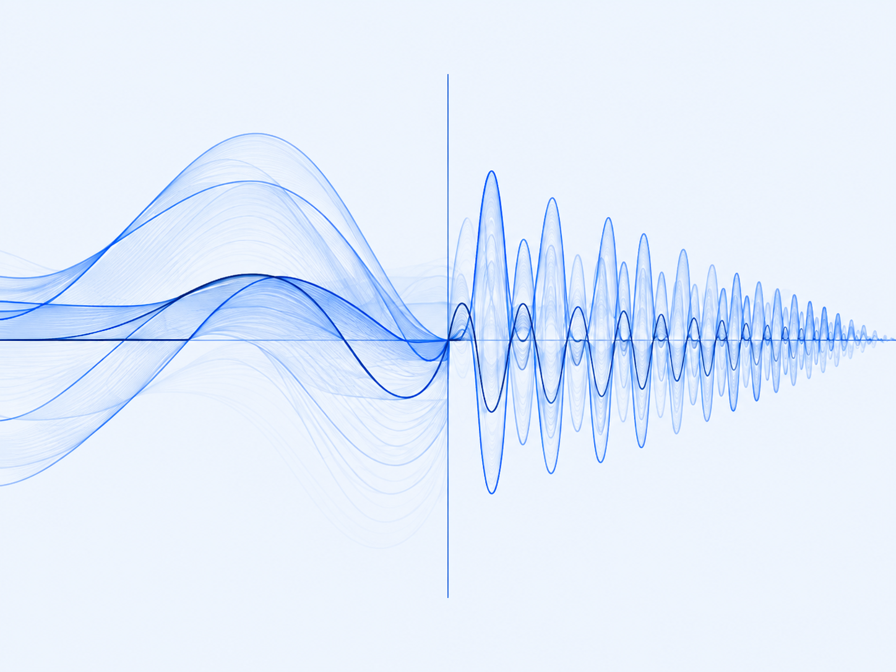

RESEARCH PAPER
Revealing Long-context Potential of Attention Heads via Frequency Kernels
ICML 2026
We analyze attention heads in the frequency domain to characterize their long-context potential and explore training-free model interventions.